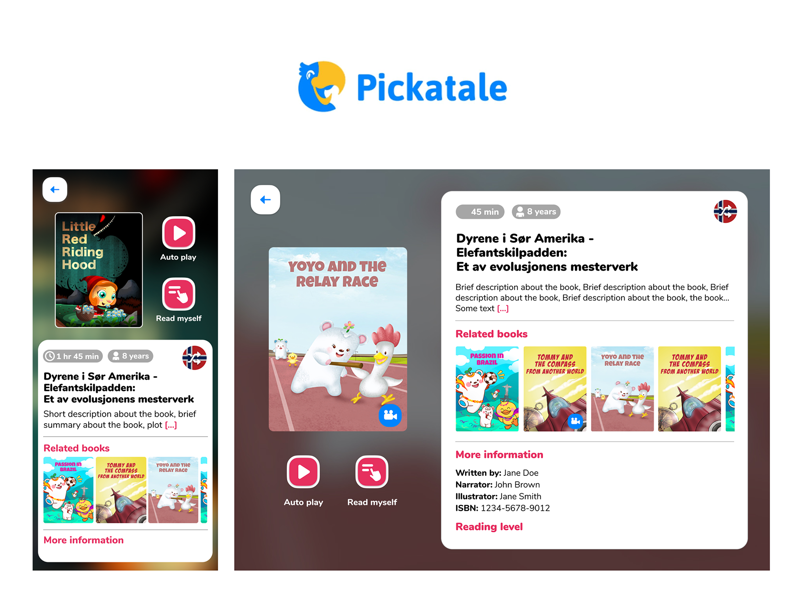
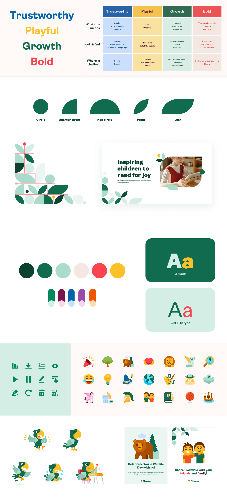
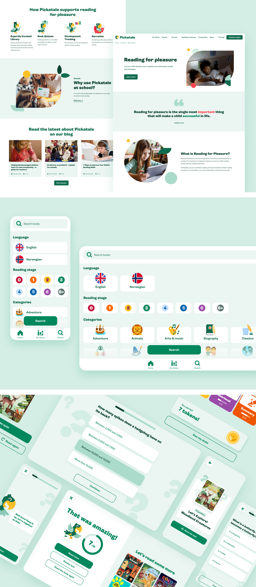

Context
Pickatale is a digital reading app for kids, operating in Norway, Denmark, Sweden and the UK. It is primarily directed at schools to use as reinforcement for kids reading, but also available for families to support their children.
As Pickatale expanded its platform and content library, the visual language needed to be standardised and updated to ensure a coherent and recognisable brand experience.
The challenge was to create a flexible yet structured design system that could support product development while remaining aligned with the brand's playful and educational personality.
My Role
Led the completion and whole cycle of this challenge, with support from the CPO and UX lead. I guided the obtained results and produced all guidelines and hands-on work. Meanwhile I sourced an artist, instructing and collaborating on our illustrations and mascot, and also managed asset production.
All of this was done while taking care of the new website and product UI updates and UX improvements along the brand launch and in following releases.
The Problem
There were several areas that needed attention, with the main issues including:
- Outdated and unmemorable brand personality, which was to be solved through a rebrand.
- A recent rebrand that was uncompleted, which provided an unfinished logo and some colour explorations.
- Accessibility issues in their digital products.
- No clear guidelines or visual system, damaging consistency.
- Website didn't respond to current business needs.
- Separate branding for schools and consumer, which made it confusing.
- All of this needed to be done in a very short timeframe to launch our new brand along with our updated and refreshed products.

The Goals
- Create a new brand, aligned with their growth and supporting a premium image, yet kind and friendly for kids.
- Establish clear brand guidelines to support business expansion, for all team members to create new designs, components, product iterations, assets or brand collateral.
- Create a scalable design system for their digital products.
- Improve collaboration between design and development teams.
- Strong foundations to create a seamless experience.
- Refresh our products in a timely and efficient manner.
- Take care of the most urgent product screens/features, aligning our new brand with improvements in usability.
Creating a Consistent Visual Language
The brand needed to have strong principles as a whole, with clear rules and do's and don'ts, examples and how to be applied in every platform.
This translated into a big impact for all teams — especially the product and marketing teams — saving time and effort on a seamless product experience. Those included:
- Core narrative
- Guidelines for all brand elements (font, colour, pattern, etc.)
- Illustration sets
- Mascot strategy and tone of voice
- Iconography


Structure
The old product and brand had a fragmented structure, so we took action and constructed libraries, styles and components.
We followed a consistent methodology for file organisation, covering all different products using the same language and logic. The covered areas included:
- Libraries and files organisation
- A scalable design system
- Components and variants

Refreshing Our Products
With the new visual language and design system in place, we refreshed the website and the most urgent product screens, prioritising feature areas with the most impact on user experience and business outcomes.


The Results
Our new brand, website and products created a whole new experience, with strong foundations for the company and very positive results.
Brand
- Helped our team on the alignment creation of assets and collateral.
- Was produced on a timely manner for launch.
- Differentiated from our competitors.
- Boosted the attraction of new customers.
Website
- Visits to the website increased by 2.3×.
- Average time on page increased from 14.7 to 32.4 seconds.
- Bounce rate decreased from 57% to 43%.
- Amount of pages visited increased from 2 to 5.
- Different pages visits oriented to growth increased by 2.1×.
Product Updates & Enhancements
- The refreshed look made our products more desirable for potential and existing users.
- The additional and improved features caused more curiosity in schools, driving an increased 2.7× conversion rate in sales.
- Usability improved, and kids experienced a better product.
- Accessibility was met at AA level.